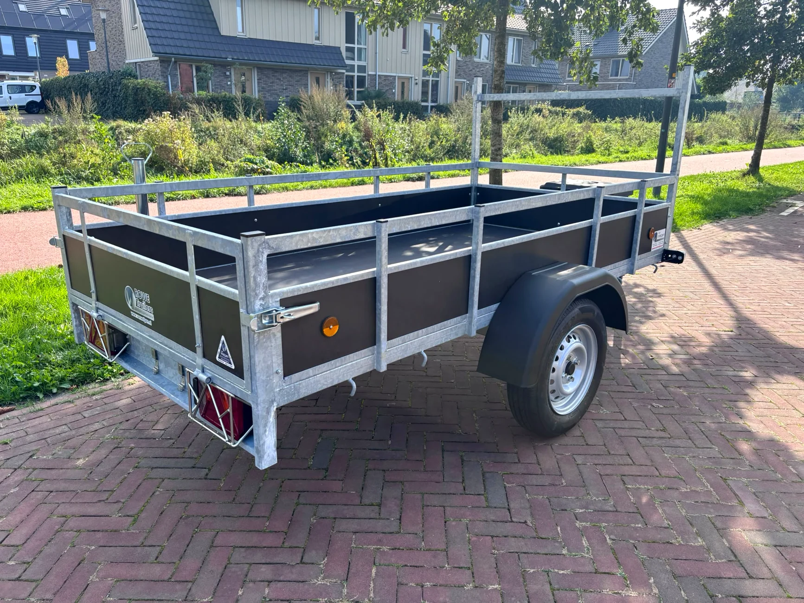
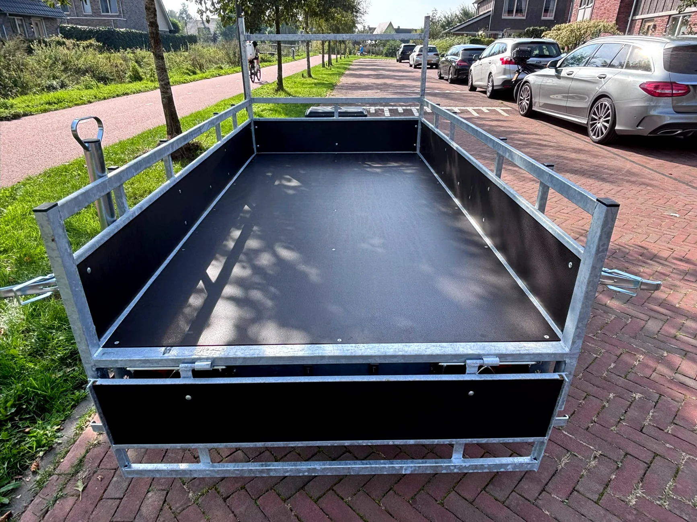
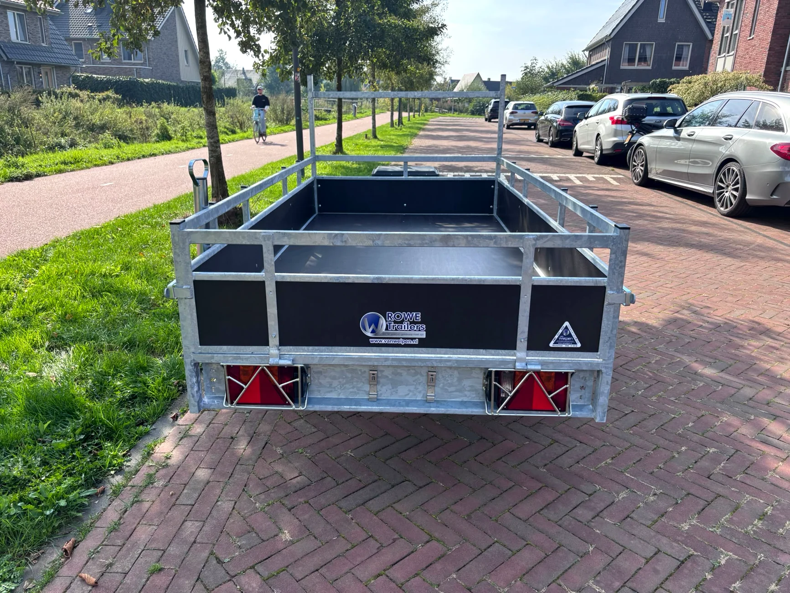

Per dag
€39Voor korte klussen
AANHANGERVERHUUR IN NIJKERK
Sterk, ruim en eenvoudig te huren.
Voor korte klussen
Voor een heel weekend
Voor grotere projecten
Afwijkende huurperiodes en exacte ophaal- en inlevertijden in overleg.
* Nog te bevestigen of 750 kg het laadvermogen of de maximaal toegestane totaalmassa is.
BEKIJK DE AANHANGER



HUURPERIODE AANVRAGEN
Kies je gewenste periode en verstuur een aanvraag. Wij bevestigen persoonlijk of de aanhanger beschikbaar is. Pas daarna is de reservering definitief.
Let op: dit is een datumkiezer, nog geen live beschikbaarheidsagenda. Bevestigde reserveringen worden nog niet automatisch geblokkeerd.
Wij helpen je graag met het huren van de aanhanger.